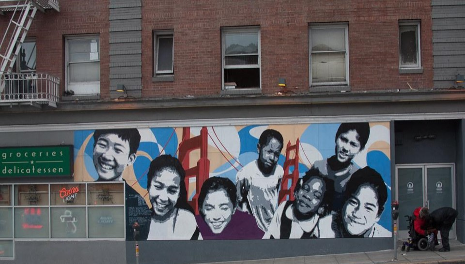

Welcome to MPD Dashboard, the data home of Multilingual Learners at SFUSD.
In the United States, English Learners (ELs) are a growing body of K-12 student population. Under the Every Student Succeeds Act, states must annually assess the English language proficiency of ELs and have accountability systems in position to ensure the equitable education outcomes for ELs.
At SFUSD, we refer to ELs as Multilingual Learners (MLs) because we believe that multilingualism and multiliteracy is the outcome of our education for this unique student group. An asset-based mindset towards MLs is the super power of SFUSD educators.
“Serving Multilingual Learners is a central responsibility of each and every educator. Effectively serving this diverse group of learners fosters excellence for all students because language is foundational to learning and development in all students.” (SFUSD Roadmap for Multilingual Learner Achievement and Success)
At Multilingual Pathway Department, our work dedicated to the equitable education of MLs is continuously progressing as we improving the design of our programs, refining our best practice, and adapting to the unique learning needs of MLs. To ensure our effectiveness and desired outcomes, we advocate for the data usage among our administrators, practitioners, and educators because research-based, data-informed policy and practice is the “scientific” way to success.
Our data sources throughout this website come from California Department of Education database and SFUSD up-to-date1 student data excluding student identifier as well as confidential information. If you have any questions or concerns regarding our data sources, please contact us at mpdash@sfusd.edu.
Data update date: 2024-03-20↩︎